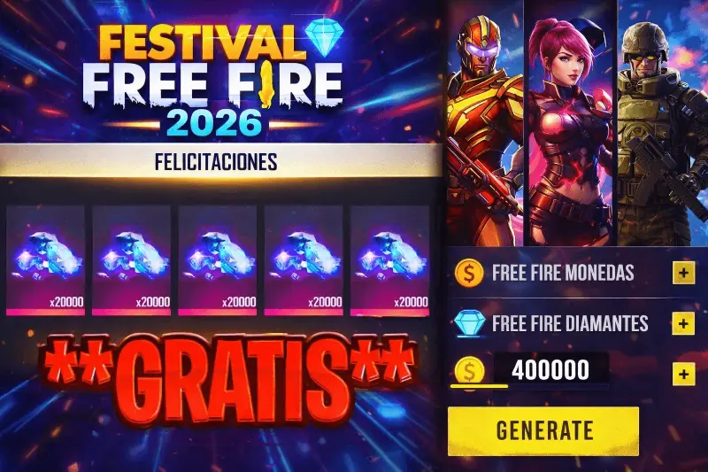

Cómo conseguir diamantes y pases élite gratis en Free Fire en 2026 (métodos legales)

Si buscas "diamantes gratis Free Fire" en Google, el 90% de los resultados son sitios que buscan robarte datos o instalarte malware. Esta guía existe para ser ese 10% restante: información honesta sobre los únicos métodos realmente funcionales para obtener diamantes sin pagar, sin generadores y sin arriesgar tu cuenta. Léela completa antes de probar cualquier cosa que encuentres en internet.
La verdad sobre los generadores de diamantes
Antes de hablar de los métodos legales, es necesario entender exactamente por qué los generadores son una amenaza real, no solo un engaño menor. Garena no tiene ninguna API pública que permita a terceros añadir diamantes a cuentas externas. Lo que sí hacen estos sitios:
- Robar tus credenciales de inicio de sesión para vender tu cuenta.
- Instalarte aplicaciones con spyware que monitorean tu dispositivo.
- Suscribirte a servicios de pago sin tu consentimiento mediante la "verificación" que solicitan.
- Recopilar tu número de teléfono para venderlo a redes de spam.
El baneo de la cuenta es el mejor escenario posible. El sistema de detección de Garena en 2026 identifica cuentas que interactúan con servicios de terceros no autorizados y aplica suspensiones automáticas sin posibilidad de apelación.
Método 1: Google Opinion Rewards — la fuente más constante
Google Opinion Rewards
App oficial de Google disponible en Android y iOS que paga con crédito de Google Play por responder encuestas breves de 1 a 5 preguntas. El crédito acumulado puede usarse directamente en la tienda de Google Play para comprar diamantes de Free Fire. Las encuestas llegan entre 2 y 6 veces por semana dependiendo de tu perfil demográfico y ubicación. Cada encuesta paga entre 0,10 y 1,00 USD. Con constancia, un jugador promedio acumula entre 5 y 15 USD de crédito al mes, suficiente para 500 a 1.500 diamantes mensuales sin gastar nada.
Microsoft Rewards
El equivalente de Google Opinion Rewards para usuarios de PC. Ganando puntos con búsquedas en Bing y completando desafíos diarios, puedes canjear puntos por tarjetas de regalo de Google Play y Amazon que luego se convierten en diamantes. La ventaja es que los puntos se acumulan por actividades cotidianas (búsquedas web) sin requerir tiempo adicional específico.
Método 2: torneos oficiales y competiciones de la comunidad
Free Fire Battlegrounds y torneos regionales
Garena organiza torneos de nivel entrada abiertos a cualquier cuenta en regla. Los torneos de fin de semana en la plataforma oficial Free Fire Battlegrounds ofrecen diamantes a los mejores clasificados. No necesitas ser jugador de alto rango: los torneos básicos están diseñados para ser accesibles. Además, comunidades de Discord independientes organizan torneos comunitarios con premios en diamantes financiados por patrocinadores locales. Los premios son modestos pero reales y verificables.
Método 3: eventos internos de Garena y misiones de temporada
Pase de Temporada gratuito y eventos de aniversario
El Pase de Temporada gratuito de Free Fire incluye entre 50 y 100 diamantes distribuidos a lo largo de la temporada como recompensas en hitos específicos. Los eventos de inicio de sesión consecutivo, los desafíos de aniversario y las colaboraciones con marcas también distribuyen diamantes directamente. Un jugador que completa sistemáticamente todas las misiones del pase gratuito cada temporada acumula entre 100 y 400 diamantes sin inversión adicional.
Método 4: sorteos de creadores verificados
Free Fire Creator Program
Los creadores con el programa de afiliados oficial de Garena reciben lotes de diamantes para distribuir a su comunidad como sorteos legítimos. Para identificar un sorteo legítimo: el creador tiene el badge de verificación en su plataforma, el sorteo pide solo seguirle y comentar (nunca tus credenciales ni descargar apps), y el premio se distribuye a través del sistema oficial de regalos de Free Fire. Cualquier sorteo que pida tu contraseña o que solicite descargar una app externa es una estafa aunque use el nombre de un creador conocido.
La paciencia es la única estrategia que funciona
Los métodos que acabas de leer no generan diamantes de la noche a la mañana. Google Opinion Rewards acumula crédito gradualmente. Los torneos requieren habilidad. Los eventos requieren constancia. Pero la suma de todos ellos, aplicados de forma sistemática durante varios meses, genera un flujo real de diamantes sin riesgo para tu cuenta y sin gasto monetario directo. Es la única estrategia que realmente funciona y que no te pone en riesgo de perder todo lo que has construido en tu cuenta.